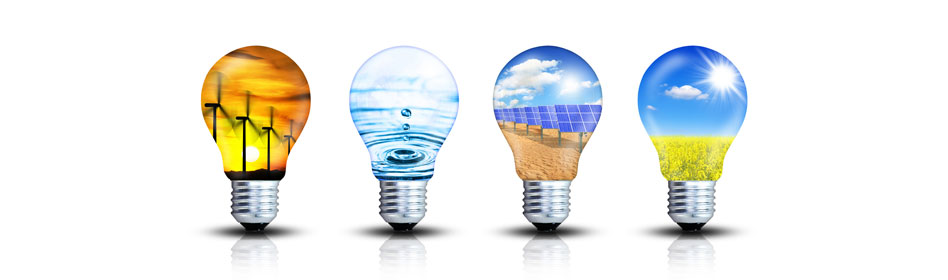

Obnovljivi izvori energije.
Obnovljivi izvori energije, obnovljivi izvori dobara ili obnovljivi resursi su izvori materijala ili energije koji se stalno ili određenim postupcima obnavljaju pa se tako mogu iskorištavati bez iscrpljivanja. To su biomasa, posebno drvo, te biljne kulture, preradom kojih se dobivaju prehrambene ili energetske sirovine.
Održiva energija ili zelena energija je energetski učinkovit način proizvodnje i korištenja energije koji ima što manje štetnog utjecaja na okoliš. Održivi razvoj je onaj razvoj koji zadovoljava današnje potrebe, bez ugrožavanja mogućnosti da i buduće generacije ostvare svoje potrebe. Održiva gradnja je svakako jedan od značajnijih dijelova održivog razvoja, a uključuje upotrebu građevinskih materijala koji nisu štetni po okoliš, energetsku učinkovitost zgrada i gospodarenje otpadom koji je nastao pri gradnji i rušenju građevina. U vezi s održivim razvojem, održiva gradnja mora osigurati trajnost, kvalitetu oblikovanja i konstrukciju uz financijsku, ekonomsku i ekološku prihvatljivost. Održiva energija obuhvaća korištenje obnovljive energije (hidroenergija, energija vjetra, sunčeva energija, energija valova, geotermalna energija, energija biomase, energija plime i oseke, te vodikova ekonomija) i energetsku učinkovitost kod njenog korištenja.
Hidroenergija, hidraulička energija ili energija vode je snaga dobivena iz sile ili energije tekuće vodene mase, koja se može upotrijebiti u čovjeku korisne svrhe. Prije nego što je komercijalna električna energija postala široko dostupna, energija vode se koristila za navodnjavanje i pogon raznih strojeva, poput vodenica, strojeva u tekstilnoj industriji, pilana, lučkih dizalica ili dizala.
Energija vjetra se pretvara je u korisni oblik energije, električnu energiju, pomoću vjetroelektrana. U klasičnim vjetrenjačama energiju vjetra pretvaramo u mehaničku, te je kao takvu direktno koristimo za mljevenje žitarica ili pumpanje vode. Krajem 2007. instalirana snaga vjetroelektrana u svijetu bila je 94,1 GW. Trenutno vjetroelektrane pokrivaju tek 1% svjetskih potreba za električnom energijom, dok u Danskoj ta brojka iznosi 19%, Španjolskoj i Portugalu 9%, Njemačkoj i Irskoj 6% (podaci za 2007.).
Električnom energijom iz vjetra vjetroelektrane snabdijevaju elektro energetsku mrežu kao što i pojedinačni vjetroagregati napajaju izolirana mjesta. Vjetar je bogat, obnovljiv, lako dostupan i čist izvor energije. Nedostatak vjetra rijetko uzrokuje nesavladive probleme kada u malom udjelu sudjeluje u opskrbi električnom energijom, ali pri većem oslanjanju na vjetar dovodi do većih gubitaka.
Sunčeva energija ili solarna energija je energija Sunca, njegova svjetlost i toplina koju ljudi koriste od davnina uz pomoć raznih tehnologija. Sunčeva svjetlost uz druge obnovljive izvore kao što su vjetar, energija valova i biomasa, se računaju u najčešće dostupne obnovljive izvore energije na Zemlji. Upotrebljava se samo mali dio sunčeve energije od one koja je na raspolaganju. Sunčeva energija pruža električnu energiju pomoću toplinskih strojeva ili fotonaponskih sustava. Jednom pretvorena, njena upotreba je ograničena samo ljudskom genijalnošću.
Djelomični popis sunčevih sustava uključuje prostor za grijanje i hlađenje kroz pasivnu solarnu arhitekturu, pitku vodu kroz destilaciju i dezinfekciju, toplinsku energiju za kuhanje i visoku temperaturu procesa topline za industrijske svrhe. Sunčeve tehnologije su široko karakterizirane ili kao pasivne ili aktivne, ovisno o načinu sakupljanja, pretvaranja i raspodjele sunčevog svjetla. Aktivne tehnike uključuju uporabu fotonaponskih članaka i sunčevih toplovodnih kolektora (s električnom ili mehaničkom opremom) kako bi pretvorili sunčevu svjetlost u korisne izlazne jedinice. Pasivne tehnike uključuju orijentaciju zgrade prema Suncu, odabir materijala s povoljnim termalnim svojstvima ili svojstvima raspršivanja svjetlosti, te projektiranje prostora kod kojih prirodno cirkulira zrak.